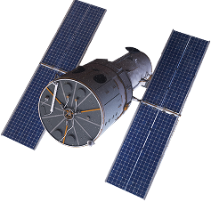

FLORA GUARD
Sistema que utiliza satélites, análise de dados e IoT para prever riscos de incêndio e agir preventivamente na proteção dos biomas.
O PROBLEMA
Os incêndios florestais representam uma das maiores ameaças aos ecossistemas naturais. Além de destruir habitats e colocar espécies em risco, as queimadas liberam grandes quantidades de dióxido de carbono na atmosfera, agravando as mudanças climáticas.

NOSSA SOLUÇÃO
O FloraGuard utiliza dados coletados por satélites para monitorar
indicadores ambientais como
temperatura, umidade e condições da vegetação. Essas informações são processadas por uma
plataforma inteligente que calcula o risco de incêndio em cada região monitorada.
Quando um nível elevado de risco é detectado, o sistema envia alertas para órgãos ambientais e
equipes responsáveis, além de acionar automaticamente sistemas de microaspersão instalados em
áreas estratégicas, contribuindo para a hidratação preventiva da vegetação.
NOSSO OBJETIVO
Transformar a tecnologia em uma aliada da preservação ambiental, oferecendo uma solução inteligente capaz de proteger florestas, reduzir impactos climáticos e contribuir para um futuro mais sustentável.